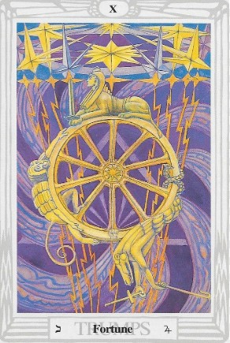

El Tarot de Thoth te trae el mensaje de La Rueda de la Fortuna, una carta que representa el cambio, el destino y la evolución de la vida. 🔄✨
La Rueda de la Fortuna simboliza el movimiento constante del universo, la suerte y las oportunidades inesperadas.
Hoy es un día en el que las circunstancias pueden girar a tu favor. Mantente abierto a nuevas oportunidades.
Lo que sube, baja, y lo que baja, sube. Acepta los ciclos de la vida y fluye con ellos.
Esta carta puede indicar un golpe de suerte o un cambio inesperado que te beneficiará a largo plazo.
Las relaciones pueden experimentar cambios significativos. Confía en el proceso y adapta tu perspectiva.
Un giro en tu carrera o proyectos puede traerte nuevas oportunidades. Sé receptivo a lo inesperado.
Posibles ganancias o cambios en tu economía. Mantén una visión positiva sobre tus finanzas.
Cuida los altibajos emocionales. La clave está en mantener el equilibrio.
"Confío en el fluir del universo.
Acepto los cambios con gratitud y esperanza.
La rueda gira a mi favor."